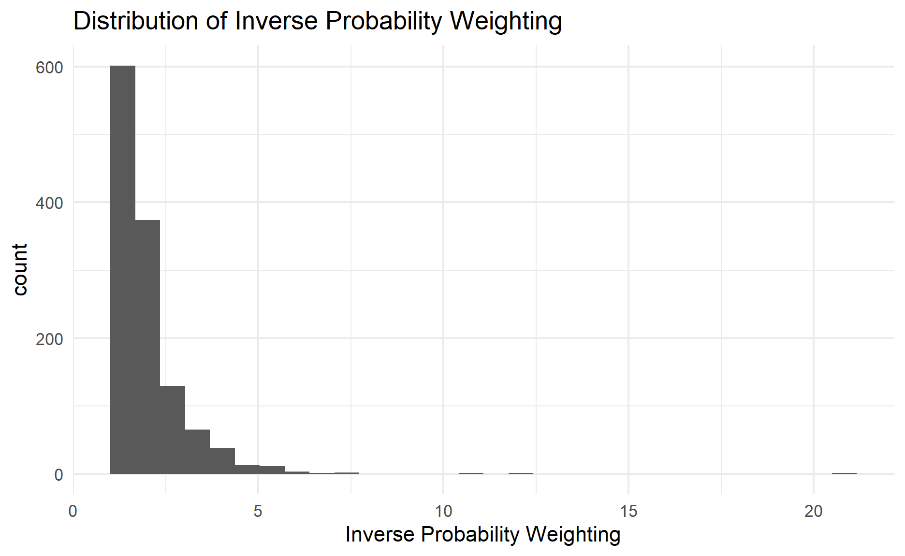

Photo by Paulo Zamora on Unsplash
In this post, we will continue our quest, i.e., exploring how to do causal inferencing.
I will be looking at how to perform inverse probability weighting.
Inverse Probability Weighting
Effectively inverse probability weighting gives higher weights to the data points that have inconsistent actual and predicted values.
For example, if the data point is predicted as a low propensity of getting treatment, but the profile did get treatment, the inverse probability weighting will assign a higher weight to this data point.
In other words, “weird” observations will get a higher weight (Heiss b).
Issues with the standard error and confidence interval
(Heiss a) explained that the inherent uncertainty in the estimation of the propensity scores and inverse probability scores are not being “passed” when we estimate the causal inference. Hence, this resulted in an overly narrow standard error and confidence interval.
As such, we will be using bootstrapping to fix this issue.
Demonstration
In this post, I will be using both base R glm function and tidymodels package to build Poisson regression.
pacman::p_load(tidyverse, tidymodels, broom, patchwork)Import Data
First, I will import the data into the environment.
barrels_obs <- read_csv("data/barrels_observational.csv") %>%
# This makes it so "No barrel" is the reference category
mutate(barrel = fct_relevel(barrel, "No barrel"))Naive Model
For comparison purposes later, I will build a naive model (i.e., not adjusting for any effects from the confounders).
model_naive <-
lm(water_bill ~ barrel
,data = barrels_obs)
tidy(model_naive)# A tibble: 2 x 5
term estimate std.error statistic p.value
<chr> <dbl> <dbl> <dbl> <dbl>
1 (Intercept) 225. 1.07 211. 0
2 barrelBarrel -29.9 1.67 -17.8 1.61e-63As shown above, the barrel effect is estimated to be 29 from the model. This suggests that the water bill will be reduced by $29 after using the barrel.
Inverse Probability Weighting
For simplicity, I will skip the DAG and will follow the recommended inverse probability model stated in problem set 3.
I will first build the propensity model.
model_logit <-
glm(barrel ~ yard_size + home_garden + attitude_env + temperature
,data = barrels_obs
,family = binomial(link = "logit"))
tidy(model_logit, exponentiate = TRUE)# A tibble: 5 x 5
term estimate std.error statistic p.value
<chr> <dbl> <dbl> <dbl> <dbl>
1 (Intercept) 0.0000162 1.07 -10.4 4.14e-25
2 yard_size 1.00 0.00000885 1.62 1.06e- 1
3 home_gardenNo home garden 1.03 0.214 0.116 9.08e- 1
4 attitude_env 1.15 0.0396 3.46 5.46e- 4
5 temperature 1.15 0.0132 10.3 4.48e-25Then, I will generate the propensity for the model.
barrels_prob <-
augment_columns(model_logit
,barrels_obs
,type.predict = "response") %>%
rename(propensity = .fitted)
barrels_prob# A tibble: 1,241 x 16
id water_bill barrel barrel~1 yard_~2 home_~3 home_~4 attit~5
<dbl> <dbl> <fct> <dbl> <dbl> <chr> <dbl> <dbl>
1 1 213. Barrel 1 25811 No hom~ 0 3
2 2 259. No barrel 0 39479 Home g~ 1 7
3 3 156. Barrel 1 13297 No hom~ 0 7
4 4 255. No barrel 0 28259 No hom~ 0 2
5 5 195. Barrel 1 21479 No hom~ 0 5
6 6 202. Barrel 1 28906 Home g~ 1 8
7 7 210. No barrel 0 7041 No hom~ 0 3
8 8 256. No barrel 0 29434 No hom~ 0 4
9 9 188. Barrel 1 24779 Home g~ 1 8
10 10 252. No barrel 0 29741 Home g~ 1 9
# ... with 1,231 more rows, 8 more variables: temperature <dbl>,
# propensity <dbl>, .se.fit <dbl>, .resid <dbl>, .hat <dbl>,
# .sigma <dbl>, .cooksd <dbl>, .std.resid <dbl>, and abbreviated
# variable names 1: barrel_num, 2: yard_size, 3: home_garden,
# 4: home_garden_num, 5: attitude_envOnce that is done, I will calculate the inverse probability weighting.
barrels_ipw <-
barrels_prob %>%
mutate(ipw = (barrel_num / propensity) + ((1 - barrel_num) / (1 - propensity)))
barrels_ipw# A tibble: 1,241 x 17
id water_bill barrel barrel~1 yard_~2 home_~3 home_~4 attit~5
<dbl> <dbl> <fct> <dbl> <dbl> <chr> <dbl> <dbl>
1 1 213. Barrel 1 25811 No hom~ 0 3
2 2 259. No barrel 0 39479 Home g~ 1 7
3 3 156. Barrel 1 13297 No hom~ 0 7
4 4 255. No barrel 0 28259 No hom~ 0 2
5 5 195. Barrel 1 21479 No hom~ 0 5
6 6 202. Barrel 1 28906 Home g~ 1 8
7 7 210. No barrel 0 7041 No hom~ 0 3
8 8 256. No barrel 0 29434 No hom~ 0 4
9 9 188. Barrel 1 24779 Home g~ 1 8
10 10 252. No barrel 0 29741 Home g~ 1 9
# ... with 1,231 more rows, 9 more variables: temperature <dbl>,
# propensity <dbl>, .se.fit <dbl>, .resid <dbl>, .hat <dbl>,
# .sigma <dbl>, .cooksd <dbl>, .std.resid <dbl>, ipw <dbl>, and
# abbreviated variable names 1: barrel_num, 2: yard_size,
# 3: home_garden, 4: home_garden_num, 5: attitude_envFinally, I will feed the info into the formula to estimate the causal effect.
model_ipw <-
lm(water_bill ~ barrel
,data = barrels_ipw
,weights = ipw)
tidy(model_ipw)# A tibble: 2 x 5
term estimate std.error statistic p.value
<chr> <dbl> <dbl> <dbl> <dbl>
1 (Intercept) 228. 1.19 192. 0
2 barrelBarrel -39.1 1.67 -23.4 1.68e-100As shown in the result above, the barrel effect is estimated to be 39, instead of 29 from the naive model after we adjust for the confounder effects.
Check the distribution of the inverse probability weights
As suggested by Prof Heiss in his IPW example, it is important to check the distribution of the inverse probability weighting.
barrels_ipw %>%
ggplot(aes(ipw)) +
geom_histogram() +
xlab("Inverse Probability Weighting") +
labs(title = "Distribution of Inverse Probability Weighting") +
theme_minimal()
As shown in the histogram, there are a few extreme weights.
We can either discard those data points with too high IPW or cap the high IPW to a lower figure.
Note that its no universal rule of thumb on what should be the cap of the IPW. I will use 10 in this demonstration.
barrels_ipw <-
barrels_ipw %>%
mutate(ipw_capped = if_else(ipw > 10, 10, ipw))
model_ipw_capped <-
lm(water_bill ~ barrel
,data = barrels_ipw
,weights = ipw_capped)
tidy(model_ipw_capped)# A tibble: 2 x 5
term estimate std.error statistic p.value
<chr> <dbl> <dbl> <dbl> <dbl>
1 (Intercept) 228. 1.18 193. 0
2 barrelBarrel -38.7 1.67 -23.2 3.94e-99The barrel effect has decreased slightly after capping the IPW.
Next, I will compile all the model results into one single table so that it is easier to compare them side by side.
modelsummary::modelsummary(list("Naive Model" = model_naive
,"IPW" = model_ipw
,"IPW with Cap" = model_ipw_capped))| Naive Model | IPW | IPW with Cap | |
|---|---|---|---|
| (Intercept) | 224.800 | 228.214 | 228.214 |
| (1.068) | (1.189) | (1.184) | |
| barrelBarrel | -29.860 | -39.050 | -38.671 |
| (1.674) | (1.670) | (1.667) | |
| Num.Obs. | 1241 | 1241 | 1241 |
| R2 | 0.204 | 0.306 | 0.303 |
| R2 Adj. | 0.204 | 0.306 | 0.302 |
| AIC | 11881.0 | 12016.2 | 12007.1 |
| BIC | 11896.3 | 12031.6 | 12022.5 |
| Log.Lik. | -5937.482 | -6005.090 | -6000.540 |
| F | 318.160 | 547.025 | 537.964 |
| RMSE | 28.95 | 29.30 | 29.27 |
Bootstrapping
As mentioned in the earlier section, one of the issues with IPW is the calculated standard error is understated and the confidence interval is too narrow.
As such, we will use bootstrap function to estimate the standard error and confidence interval.
First, I will define the model fitting function. I have taken the code from Prof Heiss’s IPW example.
fit_one_ipw <- function(split) {
# Work with just a sampled subset of the full data
current_data <- analysis(split)
# Fit propensity score model
model_prob <- glm(barrel ~ yard_size + home_garden + attitude_env + temperature,
data = current_data,
family = binomial(link = "logit"))
# Calculate inverse probability weights
df_ipw <- augment_columns(model_prob,
current_data,
type.predict = "response") %>%
mutate(ipw = (barrel_num / .fitted) + ((1 - barrel_num) / (1 - .fitted)))
# Fit outcome model with IPWs
model_ipw <- lm(water_bill ~ barrel,
data = df_ipw,
weights = ipw)
# Return a tidied version of the model results
return(tidy(model_ipw))
}Then, I will pass the info into the bootstrap function to compute the necessary results.
set.seed(1234)
ipw_bootstrap_df <-
bootstraps(barrels_obs, 1000, apparent = TRUE) %>%
mutate(results = map(splits, fit_one_ipw))As the results are nested, so we will need to unnest the results to see the values.
ipw_bootstrap_df %>%
unnest(results)# A tibble: 2,002 x 7
splits id term estim~1 std.e~2 stati~3 p.value
<list> <chr> <chr> <dbl> <dbl> <dbl> <dbl>
1 <split [1241/450]> Bootstr~ (Int~ 228. 1.23 184. 0
2 <split [1241/450]> Bootstr~ barr~ -38.0 1.73 -21.9 1.90e- 90
3 <split [1241/442]> Bootstr~ (Int~ 229. 1.14 201. 0
4 <split [1241/442]> Bootstr~ barr~ -41.2 1.59 -25.9 7.02e-119
5 <split [1241/444]> Bootstr~ (Int~ 229. 1.18 194. 0
6 <split [1241/444]> Bootstr~ barr~ -39.7 1.65 -24.0 6.47e-105
7 <split [1241/441]> Bootstr~ (Int~ 228. 1.20 191. 0
8 <split [1241/441]> Bootstr~ barr~ -37.6 1.68 -22.4 1.75e- 93
9 <split [1241/455]> Bootstr~ (Int~ 227. 1.18 193. 0
10 <split [1241/455]> Bootstr~ barr~ -36.2 1.66 -21.8 1.63e- 89
# ... with 1,992 more rows, and abbreviated variable names
# 1: estimate, 2: std.error, 3: statisticFinally, I will filter the results by looking at the barrel estimate and compute the mean and standard error.
ipw_bootstrap_df %>%
unnest(results) %>%
filter(term == "barrelBarrel") %>%
summarise(avg_mean = mean(estimate)
,avg_se = sqrt(mean(std.error ^ 2) + var(estimate)))# A tibble: 1 x 2
avg_mean avg_se
<dbl> <dbl>
1 -39.0 1.99To extract the confiddence interval, we will use int_t function from rsample package.
ipw_bootstrap_df %>%
int_t(results) %>%
filter(term == "barrelBarrel")# A tibble: 1 x 6
term .lower .estimate .upper .alpha .method
<chr> <dbl> <dbl> <dbl> <dbl> <chr>
1 barrelBarrel -41.2 -39.0 -36.9 0.05 student-tVoilà, that is how we obtain the estimated standard error and confidence interval.
Conclusion
That’s all for the day!
Thanks for reading the post until the end.
Feel free to contact me through email or LinkedIn if you have any suggestions on future topics to share.
Refer to this link for the blog disclaimer.
Till next time, happy learning!

Photo by Pixabay